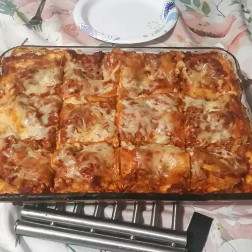

Lasagna

An Easy Lasagna Recipe
Description
You’ll find the full, step-by-step recipe below — but here’s a brief overview of what you can
expect when you make homemade easy lasagna:
Cook and drain the ground beef, then stir in the spaghetti sauce and simmer.
Combine the cottage cheese, 2 cups of mozzarella, eggs, half of the Parmesan, and seasonings.
Assemble the lasagna according to the detailed recipe.
Bake, covered, for 45 minutes.
Uncover and continue baking for 10 minutes.
Ingredients:
These are the ingredients you need:
- 1 pound lean ground beef
- 1 (32 ounce) jar spaghetti sauce
- 32 ounces cottage cheese
- 3 cups shredded mozzarella cheese, divided
- 2 eggs
- ½ cup grated Parmesan cheese
- 2 teaspoons dried parsley
- salt to taste
- ground black pepper to taste
- 9 lasagna noodles
- ½ cup water
Steps:
- Gather all ingredients and preheat the oven to 350 degrees F (175 degrees C)
- Heat a large skillet over medium-high heat. Cook and stir ground beef in the hot skillet until browned and crumbly,
8 to 10 minutes. Drain and discard grease. Stir in spaghetti sauce and simmer for 5 minutes.
- Combine cottage cheese, 2 cups of mozzarella cheese, eggs, 1/2 of the grated Parmesan cheese, dried parsley,
salt, and pepper in a large bowl.
- Spread 3/4 cup of sauce in a 9x13-inch baking dish. Cover with 3 uncooked lasagna noodles, 1 3/4 cups of cheese mixture,
and 1/4 cup sauce; repeat layers once more. Top with remaining 3 noodles, sauce, mozzarella, and Parmesan cheese.
Pour 1/2 cup water along the edges of the dish. Cover tightly with aluminum foil.
- Bake in the preheated oven for 45 minutes. Uncover and bake for an additional 10 minutes.
Let stand 10 minutes before serving.
- Serve and enjoy!